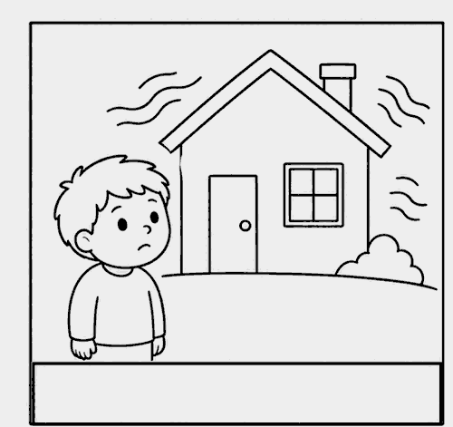
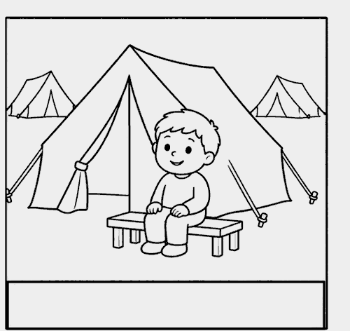
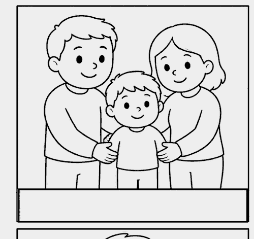
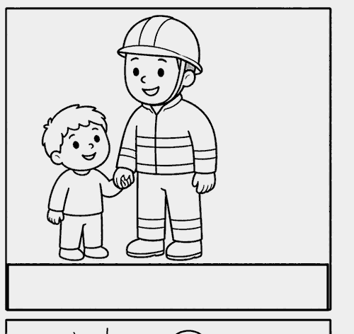
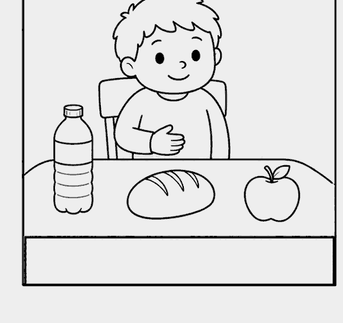
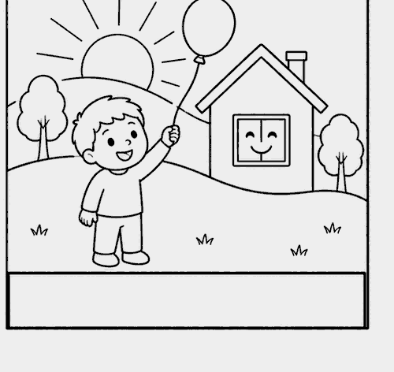

Protezione CivileGruppo Comunale Volontari — Genzano di Roma
Bambini · 3-5 anni · Inclusione
Cosa sta succedendo
Storia sociale a sequenza visiva (utile anche per autismo, italiano L2)
3-5 anni · adatta a bambini con autismo / L2📖 Leggi insieme al bambino seguendo le immagini con il dito. Una sequenza alla volta, calma. Ripeti se serve.
1

È successa una cosa difficile. Non posso stare a casa adesso.
2

Sto in una tenda con altre persone. Sono al sicuro qui.
3

La mia famiglia è con me. Mi vogliono bene.
4

I volontari mi aiutano. Hanno il casco.
5

Ho da mangiare. Ho da bere. Sto bene.
6

Tutto questo finirà. Tornerò a casa o in una casa nuova.